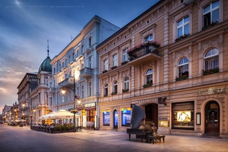

CITY
Piotrkowska Street

Piotrkoska Street
PIOTRKOWSKA STREET
PIOTRKOWSKA STREET is one of the most famous streets in Poland. It measures 4.9 kilometers. It is between liberty square and independence square. In addition, the street fulfills the role of “Main Square” in Lodz because Lodz has no “main square”.
In the beginning, Piotrkowska Street did not differ much from other streets, but from 1990 an architect and a member of the artistic group "Łódź Kaliska", Marek Janiak had the idea to create the Piotrkowska Street Foundation. the objective is to make it a pedestrian street. With this goal, the street has become almost entirely pedestrianized. More and more parallel the street has changed scenery (facade of renovated buildings) and many cafes, bars... have settled.
Today, Piotrkowska Street is the heart of Łódź. There are almost all major administrative offices, banks, shops, restaurants and pubs. Most of the official events, open-air parties, marches and celebrations, organized by the city of Łódź take place here. today Piotrkowska is the center of lodz whether cultural, political, commercial or sentimental everything happens mainly in this street.
Also located here is the Monument of Citizens of Lodz of Millennial Change, which is an area covering part of the street with about 13500 cobblestones. There was also a Galeria Łódzka shopping center that was built next to the street. This had the effect of moving a lot of shops and nobody near Piotrkowska Street and reinforcing that this street was the center of Lodz. There is also a "WAlk of fame" which was designed by Andrzej Pągowski in 1998.
There are names on golden stars with the names of many Polish start-ups such as Pola Negri, Gustaw Holoubek… Throughout the street there is no public art with many statues, moreover the buildings are often very beautiful which makes this street very pleasant to cross. We find in particular the Monument of Julian Tuwim (poet), the "Gutenberg House" one of the most famous buildings in Łódz , the Childhood House and monument of the pianist Arthur Rubinstein

The Childhood House and monument of the pianist Arthur Rubinstein
Sources: